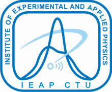

Airplane
Stratospheric balloons
Timepix2 · 37.5 h of live acquisition
Dose Field at 11 km

Model · dose rate
Measured · in 500 µm Si
0
1.7 µGy/h
Mission
All legs
or click a track on the map
Pause
00:00
1 h / s
Show cutoff
Loop
Zoom to flight
Globe
Leg
Flown
Span
Measured Si
CARI-7A D5
meas/model
Table view — every 30 minutes of each leg
Leg
t [h]
lat
lon
alt [km]
λ [°]
measured [µGy/h]
cumulative [µGy]
field @11 km [µGy/h]
build 2026-11-23 · 5e672edb